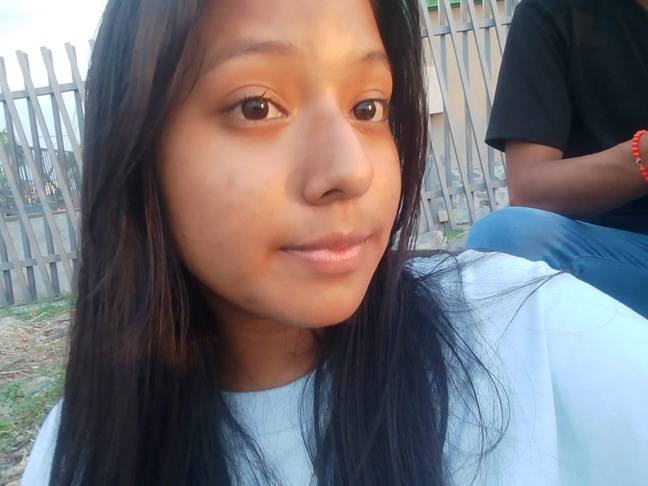

Christian Erazo Sanchez, Tengo 18 años, Cumplo el 27 de marzo del 2006 y todo esto es para alguien especial en mi corazon, A los 4 años tuve una operacion a corazon abierto lo cual me dificulto algunas cosas como peso, genetica etc,
Pero gracias a dios todo salio bien y soy alguien sano sin vicios, Tuve una infancia un poco complicada debido al comportamiento de mis padres que al dia de hoy aun siguen casi igual.
Desde muy chico me han gustado los videojuegos. Los jugaba con mi hermana mayor Nicolle Erazo, De chico yo era muy travieso y siempre me llamo la atencion las cosas digitales desde entonces solo tenia una computadora basica
la cual la empeze a usar desde los 7 años, empezando con juegos de fabrica. A los 9 años aprendi a usar tal computadora con el fin de aprender a descargar juegos, aplicaciones. etc. Soy alguien que si son amables conmigo yo respondo de la misma forma
soy puntual en cualquier cosa, Me crie con mis padres, mi hermana por un tiempo. y mi abuela Ana Lourdes Ruiz que en paz descanse. Mi abuelo Marcos que son los padres de mi papa, Mi abuela Ana como mi abuela Chavela me apoyaban cuando estaba internado en el hospital.
me llevaban comida, jueguetes y se quedaban conmigo cuando mi madre no podia o tenia que descansar, Me alegro mucho que ellas estuvieran en esos momentos duros de mi para mi. Luego de salir comenze mi vida de nuevo por la operacion Termine el Jardin, Escuela y hace poco el colegio.
Tras la perdida de mi abuelita Ana todos nos hundimos, lo que mas sufrieron fueron Mi Padre al ser su mama la que fallecio, Mi hermana al ella ser como su segunda madre, y Mi Abuelo por ser la señora con la que iban a cumplir 52 años juntos.
Yo tambien, al ser la persona con la que mas tiempo la veia en casa, hablaba con ella, y me protegia de mi madre cuando me queria golpear o castigar de algo, Nos quedamos sin alguien importante.
Por el momento es todo lo que puedes saber de mi, luego actualizare esto. SI LEES ESTO QUE SEPAS QUE TE AMO UN MONTON KATHERINE.
¿COMO SOY YO?
SOY UNA PERSONA NORMAL CON GUSTOS BASICOS, SOY MUY ENOJON CUANDO ME PROVOCAN O ME HACEN ALGO QUE NO ME GUSTA O ME HACE SENTIR MAL, ME GUSTA COMER COSAS QUE ME GUSTEN COMO POR EJEMPLO MI NOVIA. EL PURE, LOS FIDEOS. POLLO. ATUN. CARNE MOLIDA, Y MUCHAS COSAS QUE NO CONTENGAN MUCHAS FRITURAS
SOY DE CUIDARME A MI MISMO PARA TENER UNA APARIENCIA NORMAL NI TAN JOVEN NI TAN VIEJA, ME AGRADA MUCHO HABLAR CON GENTE CON LOS MISMOS TEMAS QUE YO, SINO ES ASI ME QUEDO CALLADO. ME GUSTA ANDAR EN COMPUTADORA YA QUE LAS USO DESDE LOS 7 AÑOS, TENGO MI LADO EGOCENTRICO CON LA GENTE AVECES PERO SI ME DICEN QUE DEJARA ESO POR ALGUIEN YO LO DEJO. ME GUSTA ESCUCHAR MUSICA.
MIS ARTISTAS MAS ESCUCHADOS SON XXXTENTACION, SUICIDEBOYS, SCARLXRD. EN LATINO BAD BUNNY, BIZARRAP, AVECES MILO J, EL MAS ESCUCHADO DUKI, JHON Z Y NADA MAS.
SOY ALGUIEN QUE SI ME APOYAS YO TE APOYO, SI ME DAS ATENCION YO TE LA DOY, ASI CON EL RESTO DE PERSONAS. TENGO MAL GENIO LO CUAL SAQUE ESE GENIO POR MI ABUELA, PADRE Y HERMANA.
TENGO 18 AÑOS Y MI FECHA DE NACIMIENTO ES EL 27 DE MARZO DEL 2006. MIS NOMBRES SON CHRISTIAN RONALDO Y MIS APELLIDOS ERAZO SANCHEZ. RONALDO POR EL GRAM JUGADOR DE FUTBOL CRISTIANO RONALDO ORGULLOSO DE TENER EL NOMBRE DE MI IDOLO.
Y CHRISTIAN SABRA DIOS PORQUE ESE NOMBRE. ESCUCHO MAS MUSICA LATINA QUE TRAPEROS, PERO LE ENTIENDO MAS A LA MUSICA DEL TRAP. SI LEES ESTO TE AMO CHIQUIBEIBI FELIZ SAN VALENTIN.
¿CUAL ES MI META?
TRABAJAR, TUVE UN TIEMPO QUE ME INTERESO LA UNIVERSIDAD, PERO LA VERDAD SIENTO QUE NO ESTOY PREPARADO PARA 5 AÑOS EN LA UNIVERSIDAD, Y LO QUE DESEO ES APOYAR A MIS PADRES Y MIS ABUELOS, ASI QUE TRABAJAR SIEMPRE SERA UNA OPCION, QUISIERA TRABAJAR PARA COMPRARME MIS COSAS Y SALIR JUNTO A MI CHICA YA QUE REGALAR COSAS ES UN DETALLE MMUY BONITO Y SI ES PARA ELLA NO ME INTERESARIA GASTAR, NO TENGO DEUDAS POR AHORA, ASI QUE SERIA BONITO DISFRUTAR CON ELLA Y MIS PADRES
TENGO COMO OBJETIVO Y SUEÑO IRME DE VIAJE A ESPAÑA YA SEA CON MIS PADRES O CON MI CHICA SI ELLA ME APOYA, Y SI ES CON LOS DOS MEJOR AUN. QUIERO CONOCER CIUDADES COMO MADRID Y BARCELONA Y SUS ESTADIOS Y EVENTOS, QUISIERA TENER UNA CASA DONDE PORFIN TENGA MI ESPACIO Y SI ESTA MI CHICA CONMIGO MUCHO MEJOR. EL TEMA DE TENER HIJOS LO PENSARE EN UN TIEMPO PORQUE NO ESTOY LISTO AUN, PERO SI ME GUSTARIA.
QUIERO APOYAR EN TODO A MIS ABUELOS QUE ESTAN ENFERMOS Y LA ZONA DONDE VIVEN ES PELIGROSA. LE DEBO MUCHO A MI ABUELA Y A MI MADRE, MI META ES MEJROAR COMO PERSONA Y TENER A ALGUIEN QUE ME APOYE SIEMPRE COMO MI CHICA.
FOTOS MIAS
FOTOS DE LA QUE ME GUSTA
ME ENCANTA ESTA BEIBI
MAMASITA ÑAAAAM
MI MUJEEEER DIOOOOS
MI NEGRAAA LA AMOO

MI NEGRA Y YO LUEGO DE COMERNOS A BESOS
LA PRIMERA FOTO QUE NOS TOMAMOS. LA AMO AUNQUE SALIMOS NEGROS
UNAS PALABRAS PARA ELLA
MI AMOR, HOY EN ESTE DIA ESPECIAL QUIERO DECIRTE ALGUNAS COSAS CON LA MANO EN MI CORAZONSITO. CUANDO TE ESCRIBI POR PRIMERA VEZ YA QUERIA QUE FUERAS MIA Y LO INTENTE HASTA AHORA QUE YA ERES MI CHICA Y TE ADORO MUCHO, QUIERO DECIRTE QUE DESDE EL PRIMER DIA QUE NOS VIMOS ME SENTI TAN FELIZ Y ESPECIAL AL TU QUERER VERME. ME GUSTO ESE ABRAZO QUE NOS DIMOS Y EL BESO INESPERADO QUE ME DISTE, ME DEJASTE PENSANDO EN TI TODO ESE DIA. QUIERO AGRADECERTE POR ANDAR CONMIGO Y HABLAR DIARIAMENTE CONMIGO, QUIERO DISCULPARME POR TODO LO MAL QUE TE HE HECHO SENTIR POR MIS PAYASADAS PERO NUNCA DUDES QUE TE AMO MUCHO Y QUE SIEMPRE ESTAS EN MI MENTE, QUIERO SALIR CONTIGO ADELANTE Y TE APOYARE EN TODO LO QUE PUEDA. ERES MUY ESPECIAL PARA MI Y TE LO DIGO CON TODO MI CORAZON, AMO MUCHO TU CORAZONSITO Y TE VALORO UN MONTON ESPERO PODER VERTE MUCHO MAS SEGUIDO Y COMPARTIR MOMENTOS CONTIGO. TE AMO MUCHO BEBE FELIZ SAN VALENTIN TE AMA TU CHIQUITO.